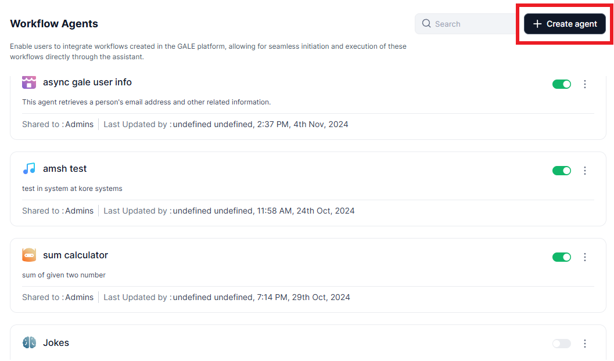
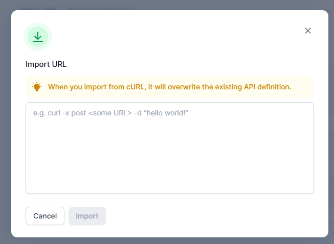
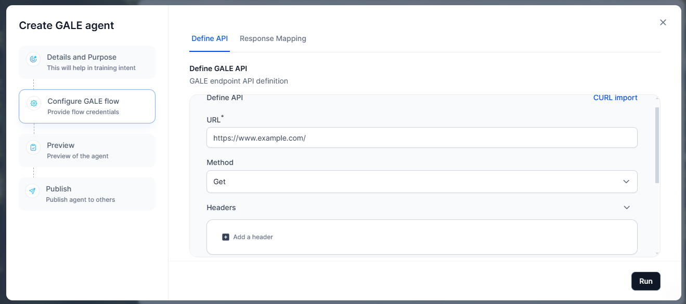
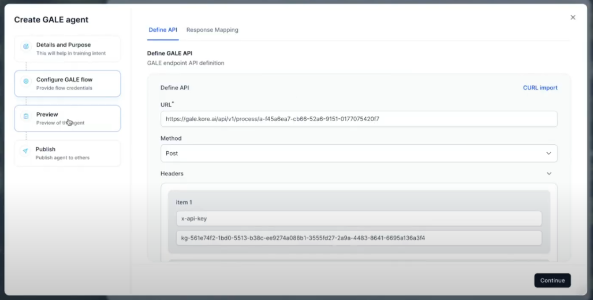

GALE Agent¶
The Workflow or GALE Agent allows users to build agents directly with the GALE platform to deliver precise, contextually relevant responses to user queries in real time. This streamlined approach simplifies the process of creating intelligent agents, enabling businesses to deploy solutions quickly and efficiently.
The Agent leverages APIs and combines retrieval and generation techniques to provide accurate and contextually relevant answers to user queries. These highly configurable agents allow users to select and fine-tune models from various options within the GALE platform. Once configured, these agents dynamically adapt to user inputs, providing real-time, intelligent responses.
Create a GALE Agent¶
To create a GALE Agent, follow the steps outlined below:
-
In the Admin Console, click AI Agents from the left pane, and then select GALE Agents. A list of available workflow agents will be displayed.
-
On the Workflow Agents page, click +Create Agent.
-
The Workflow / GALE Agent creation wizard will take you through the following steps:
{kind=link}
{kind=link}
Step 1: Details and Purpose¶
Provide a suitable and unique name for the agent and describe the purpose of the agent. Defining the agent’s purpose enables “AI for work” to accurately recognize the agent’s capabilities and effectively utilize them to respond to user queries aligned with the specified intent. It is essential to clearly outline the specific use cases for which the agent is designed.
For instance, if an agent called "Sales Buddy" is created to handle user queries, specifying its purpose helps this agent whenever a user sends a query related to any cross-sell or upsell product.

Step 2: Configure GALE Flow¶
You must integrate GALE Flow with the GALE platform and create a channel. To set up a channel and complete the integration process, follow the steps outlined below:
-
In the Define GALE API section, select between Sync Mode and Async Mode, depending on the requirements of your interactions.
-
Sync Mode: In sync mode, users receive immediate responses. This mode doesn’t require a POST URL or access token, making it simple for quick interactions. However, sync mode includes a 60-second timeout, so it’s best suited for gale workflow that can be completed within that timeframe.
-
Async Mode: In async mode, the setup is more flexible and is ideal for cases that may take longer than 60 seconds. This mode requires a POST URL and the agent’s access token to be specified in the GALE agent endpoint. Once the agent completes its process, GALE posts the response back to the specified endpoint.

-
-
For Async Mode, enter the POST URL and Access token.

To configure async mode with the GALE Platform, copy the POST URL and Access Token from the agent, then follow the steps outlined below.-
Navigate to the GALE Platform. Open the agent you want to add the channels to.
-
On the Agents tab, click the name of the agent that you want to integrate and then click Agent endpoint in the left navigation.

-
Select the Async push to enable asynchronous response handling and click the settings icon next to the Async push option.

-
Next, paste the copied POST URL and Access Token into the appropriate fields on the Sync/Async mode setup page.

-
Click Save to save the configuration.
-
-
Next, on the Define API page, click on the CURL Import option.

-
The Import URL dialog is displayed. To get the curl, follow the steps outlined below:
-
Navigate to the GALE Platform. Open the agent you want to add the channels to.
-
On the Agents tab, click the name of the agent that you want to integrate and then click Agent endpoint in the left navigation.
-
Copy the appropriate cURL to use in the platform to complete the integration. Use the sync cURL for sync mode and the async cURL for asyn mode.

-
-
In the Import URL, paste the cURL that you have fetched from the GALE Agent.

-
Click Import to add the cURL
-
Click Run to fetch the API details.
 -
Once the API details are fetched, click Continue.
-
The API response output displays all the keys received in the response. These keys are used to map the specific value that should be shown to the end user.

-
Click Continue to move to the next step.
{kind=link}
{kind=link}
{kind=link}
Step 3: Preview¶
In the Preview section, a list of sample queries is displayed. If needed,
you can add additional queries by clicking the + Add Query button. Once
you're ready, click Continue to proceed to the next
step.
Step 4: Publish Workflow Agent / GALE Agent¶
In the Publish section, you can finalize and deploy your GALE agent. Follow the steps outlined below to publish the GALE agent:
{kind=link}
-
Provide the following details
-
Published Version: Select the version of the agent you are publishing.
-
Publish to: Choose who will have access to the agent:
-
Admins: Restrict the agent to Admin users only.
-
Selected User Groups/Users: Specify individual users or groups.
-
Everyone in the Account: Make the agent available to all users.
-
-
Enablement Type: Define how users can enable or disable the agent:
-
Always Enabled: Users cannot disable the agent; it is always active.
-
User's Choice: Users can choose whether to enable or disable the agent as needed.
-
-
-
Click Publish. Once published, your agent is displayed in the Agent list of the Admin console page.
Modify a Workflow Agent / GALE Agent¶
To modify the workflow agent / GALE agent, follow these steps:
-
Navigate to the Agents list page and locate the agent you wish to modify.
-
Click the three dots icon next to the agent’s name. A menu with the following options will appear:
-
Edit – Open and modify the agent's details.
-
Publish/Unpublish – Change the agent's status.
-
Delete – Permanently remove the agent.
-
-
Click on the required option and continue to complete the modifications as needed.
{kind=link}
Manage Input and Output¶
In GALE, Agent Flows provide a structured way to manage input and output variables that control data flow and context throughout the agent's execution.
-
Input Variables: The input variables provide initial data to the agent flow.
-
Output Variables: The output variables store and make accessible the derived values from the flow. You must define output variables to capture the results you want to return from the agent.
Once input and output variables are defined in the GALE Flow, they become accessible throughout the flow and will be automatically displayed in “AI for Work”. This makes it easy to view and manage the data exchange between the agent and the connected platform.
{kind=link}
For more information on input and output variables, refer to the manage input and output.
User Interaction with Sync and Async Flows¶
The end-user experience varies between sync and async flows in the GALE Agent, offering flexibility in response times and delivery methods.
In sync mode, users can expect immediate responses. After selecting the appropriate agent, users simply enter a query and receive a real-time answer displayed within the current interface. This real-time interaction is ideal for scenarios requiring quick responses, as the system processes the request and displays the output directly within the current session. This mode is ideal for cases where the file processing can be completed within a short timeframe (up to 60 seconds), allowing users to quickly retrieve answers.

In async mode, the process accommodates more complex queries that may require additional processing time. Users still select an agent and enter their queries. However, instead of receiving immediate results, they are notified in a notification section once the query is processed. This approach makes async mode particularly suited to cases where the query might take more than 60 seconds to execute.
{kind=link}